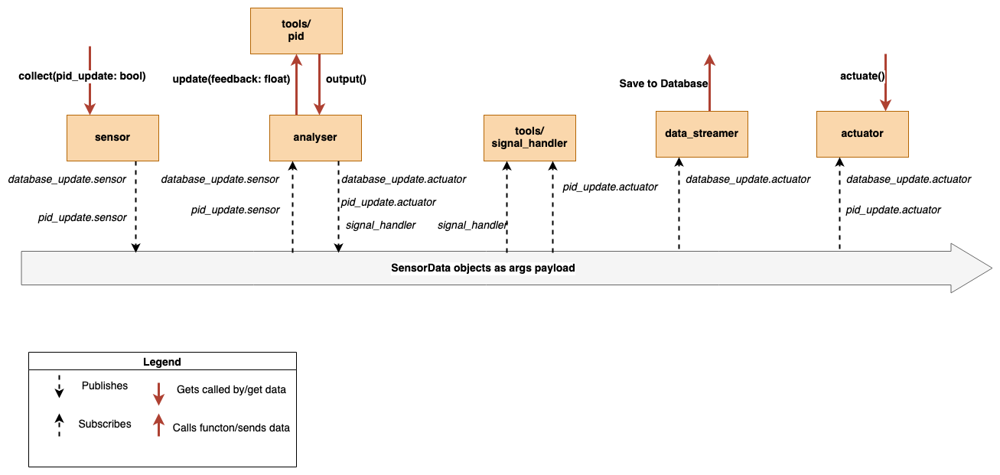

Edge Device System Design
Overall, our project is split into 3 standalone systems: on the Raspberry Pi, in the Azure Cloud and on a remote desktop with access to the internet, and whitelisted on the Azure SQL Server list.
The tasks happening in the system are split in the following way:
- Data collection (from sensors), processing and actuation currently all happen on the Edge device.
- Device registering, Data storage and transmission happen on the Azure Cloud.
- Data display and user interaction happen on a remote desktop app with access to the internet.
Design of Edge Device System: Raspberry Pi
The software running on our edge device is divided up into 5 modules:
-
sensormodule: contains aSensorinterface and implementations of it for each sensor in the system: DHT11 (humidity and temperature sensor), Light intensity sensor, Soil Moisture sensor and a Water Level sensor. Additionally it has an implementation for a Sunlight sensor, however this sensor is not used in our solution, but is left in the codebase for possibility of future expansion. -
analysermodule: Contains anAnalyserinterface and implementations of it for each analyser in the system. The analyser’s job is to listen in on incoming sensor data, utilise PID module to, or through different methods, decide on actuation value for that subsystem. The implemented Analyser's are:BrightnessPidAnalyser,HumidityPidAnalyser,MoisturePidAnalyserandTemperatureAnalyser, each one corresponds to its subsystem and controls the output of the actuators. In case of temperature, as we decided against including a heater in our prototype, it does not provide actuation values but still streams the data to the cloud and provides a skeleton for future code if a heater element is would be added. -
actuatormodule: Contains anActuatorinterface and implementations of it for each actuator in the system. The actuator’s job is to listen in on incoming actuation control messages from the analysers and set the actuator value to the requested value. The implementedActuator's are: -
Fansfor the regulating the speed of the input and output fans in the system, and by so doing moderate the humidity of the system (also regulate temperature, but not connected to theTemperatureAnalyser). -
LEDLightscontrol the brightness of the LED strip, and so doing regulate the overall brightness in the system. -
WaterPump , which controls the water pump connected, and by so doing changes the soil moisture of the plant and the water level of the container from which it pumps the water. -
data_streamermodule: Contains an implementation ofDatabaseManager,AzureDatabaseManagerandIoTHubStreamer. The last two inherit fromDatabaseManager. -
DatabaseManager: Allows for creation and management of a local SQLite3 database, and can be used when the system is offline. -
AzureDatabaseManager: Interacts directly with the Azure DB and allows for creation and management of an Azure SQL DB. It relies however on Microsoft ODBC driver and therefore cannot be directly used for on the raspberry pi, it is however used by the desktop app. -
IoTHubStreamer: Connects to and registers the Raspberry pi with the IoT Hub, and allows for data streaming to the IoT Hub. -
toolsmodule: Contains Classes reused throughout the system for data storage, logging and other helper classes. -
logging : Defines a global variable using
colorlogmodule, and implements functions for printing different level messages, which can be globally changed and allow for monitoring of the system in shell while it is running, printing messages such as: debug messages, information messages (giving updates on important events taking place), warning messages (e.g. when there is not enough water to pour), errors (not used in the system, but can be used if the system is expanded) and Critical messages, printed when something is very wrong (e.g. suspicious sensor readings (temperature above 35 degrees Celsius). - pid : Contains a class PID defining the behaviour of a PID system, incorporated into analyser module by classes relying on PID control of their subsystem. It also supports caching the parameters of the PID system, so that the system will have a quicker recovery after being restarted.
-
sensor_data: Contains a classSensorDatadefining the contents of messages travelling between modules. Is also used for logging current state of the system, if user connect to the Raspberry Pi over ssh and runs the program from console. (Messages displayed are defined in the logging submodule of the tools module. -
signal_handler: Contains a classSignalHandlerwhich lays out the grounds for handling asynchronous timed events, by the use of Python signal library and using the Unix Signals - in this case SIGALRM. Currently this feature is only utilised by theMoisturePidAnalyser, which sends messages to theSignalHandlerto turn the pump on and off with a timeout. The code should be a clear guidance as to how handle such events for other subsystems, if proves to be necessary when the project is expanded. -
status: Implements a staticEnumclass, containing a definition of an enabled and disabled sensor or actuator. It is used by all sensors and actuators, but currently not acted on. Can be useful if future extensions requires some sensors/actuators to be disabled and re-enabled during runtime.
Design Patterns
Our system relies heavily on the Publisher Subscriber messaging design pattern, in this case utilising the pypubsub module for the implementation of it. The actual software implementation of the messaging system is described in the SOFTWARE IMPLEMENTATION section, with module and class interaction played out in more detail. Below is a diagram displaying the message flow in the Raspberry Pi system, along with some indications of what triggers certain events/where the data ends up.
Azure Cloud System Design
The design of our cloud solution relies on the Microsoft Azure cloud service. We were provided with a resource group by Avanade to work with. We created 5 resources in total:
- IoT Hub for registering Raspberry Pi and communicating with it.
- This resource lies at the core of scalability of our system. It can register many devices at once and manage communication to and from the devices. In the next iterations of the project, this can be utilised by either: accepting control messages from IoT Hub by the Raspberry Pi, or adding more edge devices (e.g. Raspberry Pis) to the system.
-
Stream Analytics Job: for transmitting data received from IoT Hub to an SQL Database.
- This resource accepts as input data from the IoT Hub, which comes in as JSON files, and runs Insert queries on the SQL Server to insert the newly received data into the SQL Database. It only allows data matching the expected format to pass, so is in a way a correctness checker.
-
SQL Server and SQL Database: for storing the data.
- The SQL Server hosts the SQL Database, which in turn stores all the data sent from the Raspberry Pi and got passed on by Stream Analytics Job. It is also directly accessed by our GUI app and polled for data for display.
-
Log Analytics Workspace: resource for debugging
- This resource has access to all resources in our resource group, and gives us insights into more detailed error logs from each resource. This allowed us to fix multiple bugs encountered during the development phase, which may have been much harder to track otherwise. (e.g. incorrect firewall setup, missing permissions, misformatted JSON messages incoming to IoT Hub and a few others :D )
In short: all modules are disconnected from one another (apart from some submodules in the tools module, as they are
more widely used in the system. The main.py file instantiates objects of all modules, and controls them. The pubsub
messaging comes in when collect() is called on the sensor objects, and they propagate messages to the system, with
their contents being a SensorData object. These messages get picked up by analyser objects, then transferred again and
picked up by either signal_handler or the actuators themselves.
The main loop in main.py also decides when the data is being sent over to the data_streamer objects, to either save
locally or publish to IoT Hub. Currently this happens on a single thread, causing the program to temporarily pause
when the data is being sent out. This however would be a great improvement for the next iteration of the system.
The system also heavily relies on interfaces and inheritance. Python being a very flexible language, Sensor, Actuator and Analyser classes
are not exactly interfaces, as they provide basic definitions of their methods. So for the sake of correctness, I will refer to them as
super classes of the other files in their respective modules.
Cloud Resource Security
To ensure the security of our cloud system, at the same time allowing the repository to be public, we utilised dotenv python
library to securely store and load information which shouldn’t be shared publicly. This comes down to 2 Keys: Raspberry Pi unique
Key for IoT Hub and Azure DB login Key. The keys are stored in .env files, which have to be manually created from the publicily
available .env.template file. The template file contains, as the name suggests, a template for each of the Keys that are necessary
for the program to run.
Desktop App System Design
The GUI system design is described in more detail along with its implementation in the SOFTWARE IMPLEMENTATION section.